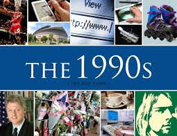
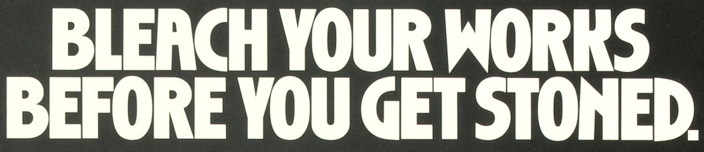

The 1990s

Grunge Music is an alternative rock genre and subculture that emerged during the mid-1980s in the American Pacific Northwest state of Washington, particularly in Seattle and nearby towns. Grunge fuses elements of punk rock and heavy metal, featuring the distorted electric guitar sound used in both genres, although some bands performed with more emphasis on one or the other. Like these genres, grunge typically uses electric guitar, bass guitar, drums and vocals. Grunge also incorporates influences from indie rock bands such as Sonic Youth. Lyrics are typically angst-filled and introspective, often addressing themes such as social alienation, self-doubt, abuse, neglect, betrayal, social and emotional isolation, psychological trauma and a desire for freedom.

Grunge Style The Grunge hype at the beginning of the decade popularized flannel shirts among both sexes during the 1990s. Grunge and Hip-Hop inspired anti-fashion saw an expansion of the slouchy, casual styles of previous decades, mostly seen in baggy and/or distressed jeans, cargo shorts and pants, baseball caps (often worn backwards), chunky sneakers, oversized sweatshirts, and loose-fitting tees with bombastic graphics and logos.
Grunge Lifestyle Many music subcultures are associated with particular drugs, such as the hippie counterculture and reggae, both of which are associated with marijuana and psychedelics. In the 1990s, the media focused on the use of heroin by musicians in the Seattle grunge scene, with a 1992 New York Times article listing the city's "three principal drugs" as "espresso, beer and heroin"
